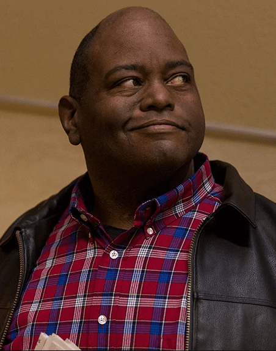
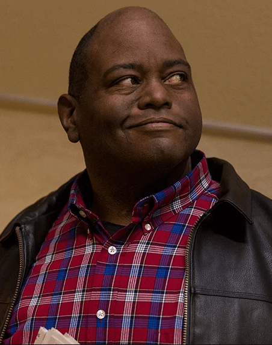

Testimonials!
Welcome to our Testimonials Page, where you'll find the voices of satisfied clients who have experienced the exceptional legal services provided by Saul Goodman. Don't just take our word for it; hear directly from those whose lives were positively impacted by Saul's unwavering dedication, strategic brilliance, and undeniable charisma. From criminal defense to personal injury and business law, these testimonials showcase the remarkable outcomes achieved under Saul's guidance. Read on to discover firsthand accounts of triumph over legal challenges, and see why Saul Goodman is the go-to attorney for those seeking justice.
 

"Saul Goodman is not just an attorney; he is a business magician! When I needed legal guidance to navigate the complex world of entrepreneurship, Saul was the guiding light that helped me steer my ship to success. His in-depth understanding of business law and his ability to think outside the box were invaluable. From drafting airtight contracts to providing insightful advice on corporate structuring, Saul was my go-to resource. He was always available to answer my questions, and his expertise played a significant role in the growth and success of my business. If you're an entrepreneur seeking legal guidance, look no further than Saul Goodman - he is a true game-changer!" - Michael S.
"I was facing a serious criminal charge that had the potential to ruin my career. I reached out to Saul Goodman, and from the moment we spoke, I knew I was in good hands. Saul's dedication, expertise, and unwavering support throughout the entire legal process were truly remarkable. He meticulously dissected every piece of evidence, built a strong defense strategy, and fought tooth and nail for my innocence. Thanks to Saul's brilliant courtroom performance, I was acquitted of all charges. I can't express my gratitude enough. Saul Goodman is the attorney you want by your side when the odds are stacked against you." - John D.
"After a devastating accident, I found myself overwhelmed and unsure of how to navigate the complex world of personal injury law. Thankfully, I came across Saul Goodman's name, and it turned out to be a life-changing encounter. Saul's compassion, professionalism, and tenacity were evident from our very first meeting. He fought fiercely on my behalf, ensuring that I received the compensation I deserved for my injuries and losses. Saul's attention to detail and strategic approach to negotiations with the insurance company were exceptional. I can't thank him enough for helping me reclaim my life and secure a brighter future." - Emily R.
"Saul Goodman was my savior when I got into trouble after an incident. His determination and skills were unmatched. With his strategic approach and persuasive arguments, I avoided serious legal consequences. Saul's talent was so impressive that I ended up working for him. He's not just a master of the courtroom but also a mentor who brings out the best in his team. Better believe it, when it comes to finding the best legal representation, you Better Call Saul!" - Huell B.